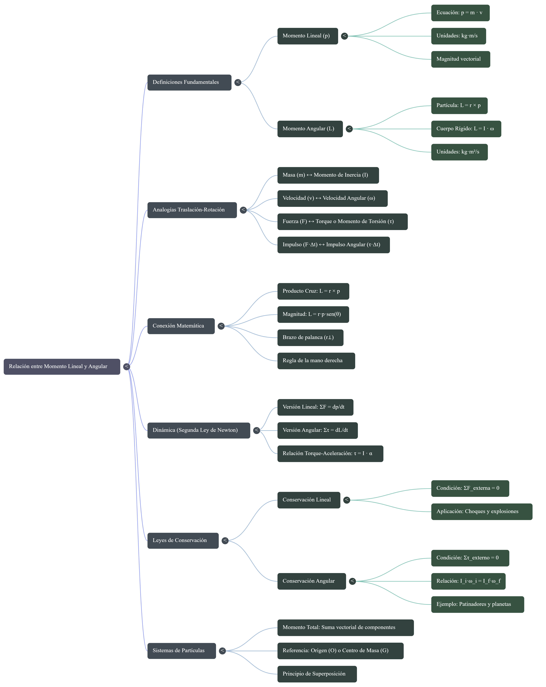

Conceptos Fundamentales
Cantidad de Movimiento Lineal
La cantidad de movimiento lineal describe la inercia de un objeto en traslación, calculada como el producto de su masa por su velocidad[cite: 3].
Cantidad de Movimiento Angular
Por otro lado, la cantidad de movimiento angular hace lo propio para los objetos que giran, con la particularidad de que aquí influye su inercia de rotación y su velocidad angular[cite: 4].
Metodología: La "Receta" para Resolver Problemas
A la hora de resolver un problema de cantidad de movimiento (ya sea lineal o angular), puedes seguir estos pasos como si se tratara de preparar una receta matemática[cite: 7]:
Preparar los ingredientes (Identificar variables) [cite: 8]
- Para movimiento lineal: Busca en el problema la masa del objeto y su velocidad de traslación[cite: 9].
- Para movimiento angular: Identifica el momento de inercia o el radio de giro, y su velocidad angular o lineal[cite: 10].
Mezclar usando la ecuación [cite: 11]
- Lineal: Multiplica la masa por la velocidad (p = m · v)[cite: 12].
- Angular: Multiplica el momento de inercia por la velocidad angular (L = I · ω) o la masa por la velocidad y el radio (L = m · v · R)[cite: 13].
Sazonar con la Conservación [cite: 14]
Verifica si hay fuerzas externas o momentos de torsión aplicados[cite: 14]. Si el sistema está libre de ellos, la cantidad de movimiento inicial debe ser exactamente igual a la final (pi = pf o Li = Lf)[cite: 15].
Servir con las unidades correctas [cite: 16]
Asegúrate de que tu respuesta final lineal esté en kg·m/s y la respuesta angular en kg·m²/s[cite: 17].
Ejemplos de Aplicación
Para ver la receta en acción, analicemos un ejemplo de cada uno[cite: 19]:
Ejemplo Lineal
Imagina un ave de 5 kg de masa que vuela a una velocidad de 34 m/s[cite: 20].
Cálculo: p = m · v
p = 5 kg · 34 m/s
Resultado: 170 kg·m/s [cite: 21]
Ejemplo Angular
Considera una barra uniforme delgada de 1 m de largo con una masa de 7 kg que gira sobre su centro a una velocidad angular de 18 rad/s[cite: 22].
1. Inercia (I) = (1/12) · m · L² = 0,58 kg·m² [cite: 23]
2. Fórmula: L = I · ω
L = 0,58 · 18
Resultado: 10,44 kg·m²/s [cite: 24]
Conclusiones
El estudio comparado de la cantidad de movimiento lineal y angular nos revela una de las simetrías más hermosas de la naturaleza: la correspondencia absoluta entre el mundo de la traslación y el mundo de la rotación[cite: 26].
A través de esta unidad, hemos aprendido que cada magnitud lineal tiene un "espejo" en el ámbito angular[cite: 27]. La masa se convierte en momento de inercia, la velocidad lineal se transforma en velocidad angular, y las fuerzas netas se traducen en momentos de torsión[cite: 28].
Más allá de las fórmulas, el verdadero pilar de este tema es el Principio de Conservación[cite: 30]. Cuando un sistema está aislado, su cantidad de movimiento se vuelve una constante inmutable en el tiempo[cite: 32]. Esto explica cómo un clavadista olímpico altera su velocidad de giro en el aire modificando su momento de inercia [cite: 34], y la razón por la cual las estrellas de neutrones giran a velocidades vertiginosas tras colapsar[cite: 35].
Quiz Interactivo
1. ¿Qué variables se necesitan identificar como primer paso para resolver un problema de movimiento lineal?
2. ¿Cuáles son las dos fórmulas principales para calcular la cantidad de movimiento angular?
3. ¿Qué condición debe cumplirse para que la cantidad de movimiento se conserve?
4. En el experimento del bloque girando atado a un cordel, ¿por qué al tirar del cordel no se genera un momento de torsión externo?
5. ¿Cuáles son las unidades correctas para expresar la respuesta final de la cantidad de movimiento angular?
Recursos Visuales y Audiovisuales
Mapa Mental del Tema

Material Audiovisual
Refuerza la comprensión de las fórmulas y el principio de conservación con las siguientes explicaciones en video.
Referencias Bibliográficas
- Hibbeler, R. C. (2016). Ingeniería Mecánica: Dinámica (14a ed.). Pearson Educación.
- Beer, F. P., Johnston, E. R., & Cornwell, P. J. (2010). Mecánica vectorial para ingenieros: Dinámica (9a ed.). McGraw-Hill.
- Serway, R. A., & Jewett, J. W. (2018). Física para ciencias e ingeniería. Volumen 1 (10a ed.). Cengage Learning.
- Meriam, J. L., & Kraige, L. G. (2012). Engineering Mechanics: Dynamics (7th ed.). John Wiley & Sons.
- Resnick, R., Halliday, D., & Krane, K. S. (2001). Física, Volumen 1 (5a ed.). Grupo Editorial Patria.
- Sears, F. W., Zemansky, M. W., Young, H. D., & Freedman, R. A. (2013). Física universitaria, Volumen 1 (13a ed.). Pearson.
- Marion, J. B. (1995). Dinámica clásica de las partículas y sistemas. Reverté.
- Tipler, P. A., & Mosca, G. (2010). Física para la ciencia y la tecnología, Volumen 1 (6a ed.). Reverté.